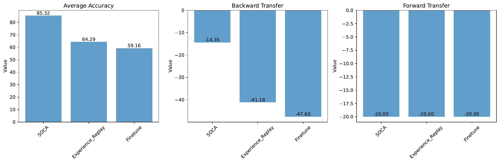
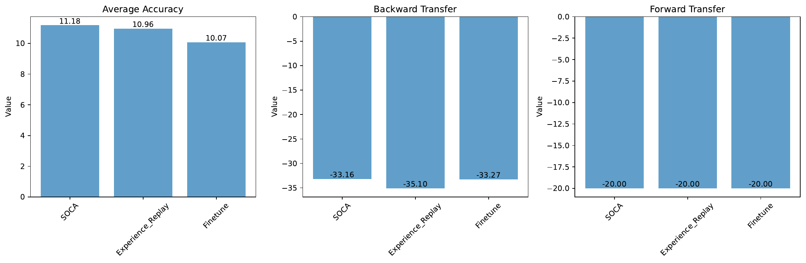
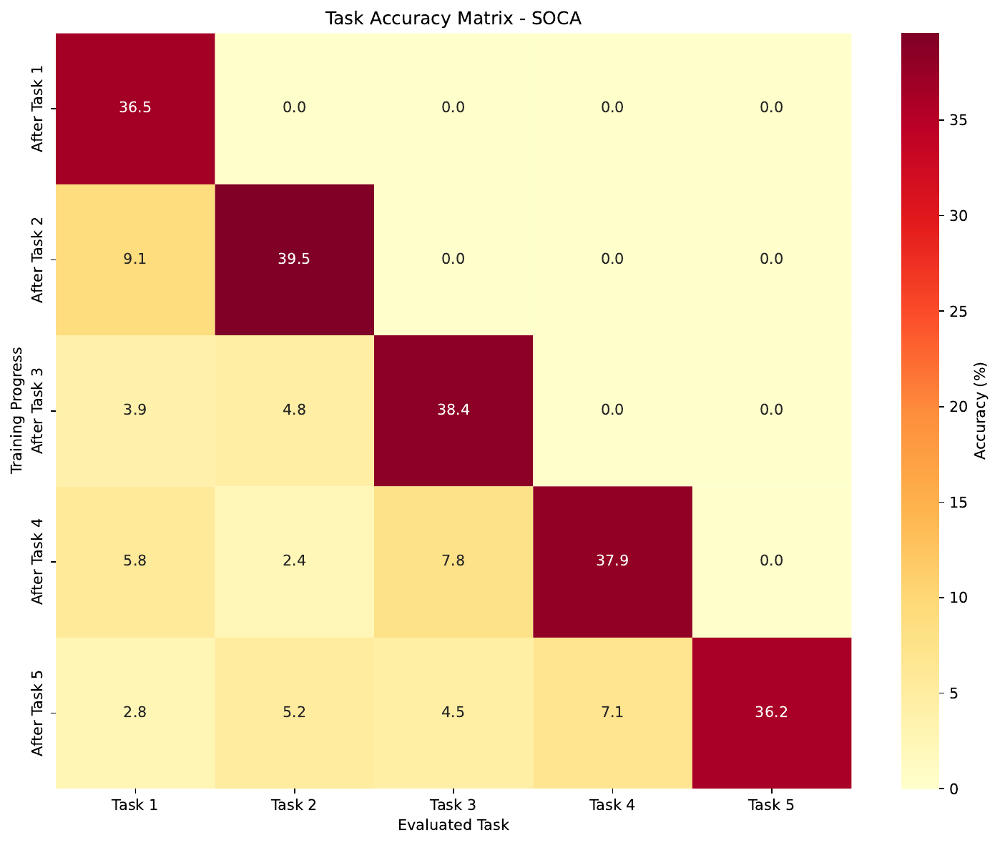
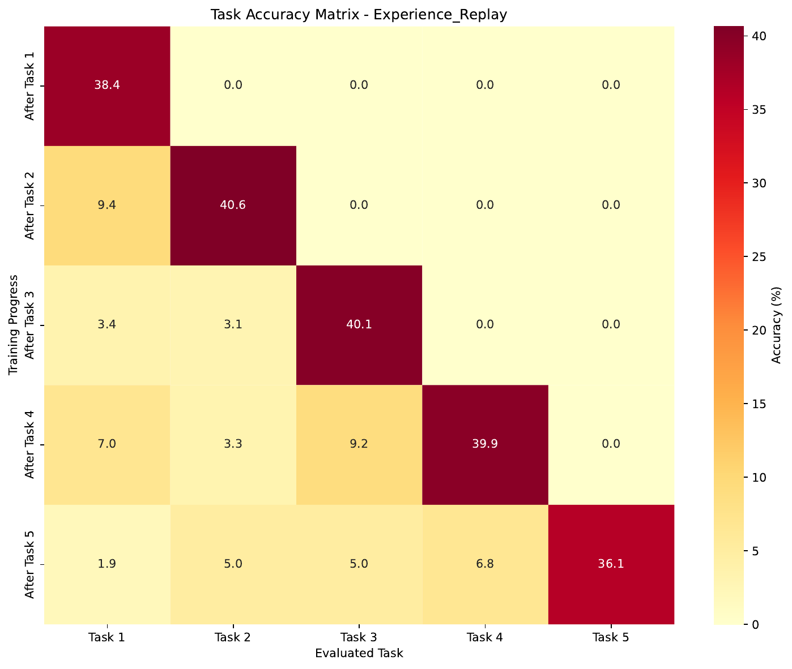
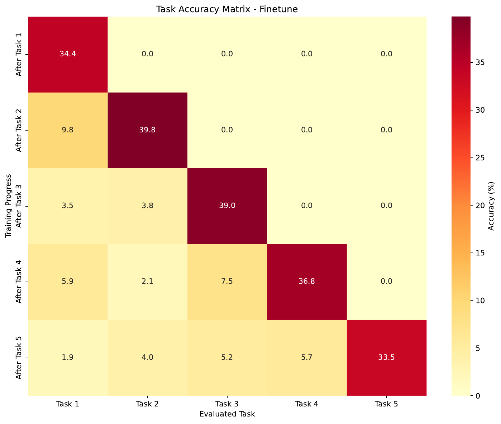
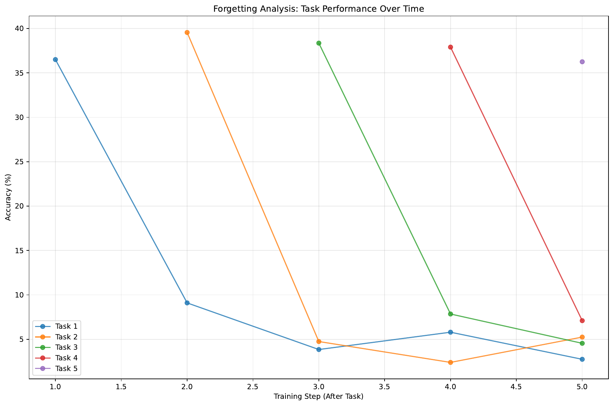
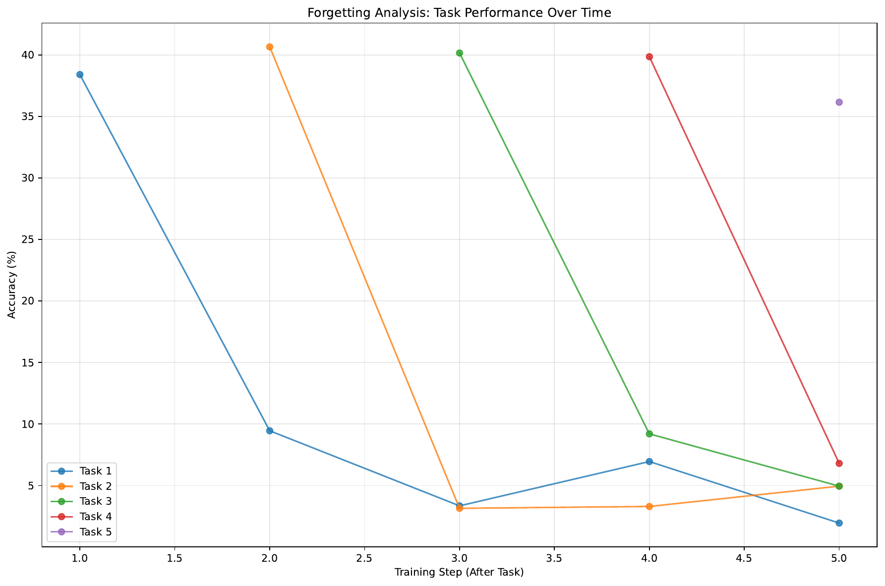
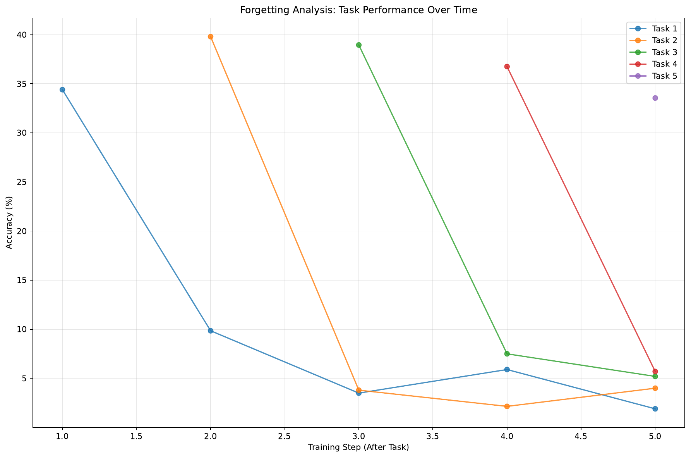

Modern Meta-Continual Learning (Meta-CL) faces a dichotomy between computationally efficient first-order streaming methods and geometrically-aware but offline second-order methods. This gap hinders the development of true lifelong learning agents that must learn from a continuous stream of tasks with both efficiency and high fidelity. The core challenge is to incrementally build a global model of task structure without unbounded growth in memory or computation, all while balancing the stability to prevent catastrophic forgetting and the plasticity to learn new tasks rapidly. We introduce Streaming Orthogonal Curvature Aggregation (SOCA), a novel framework that bridges this gap. SOCA builds and maintains a persistent, low-rank, global 'meta-curvature' model in a fully online manner. Our core contribution is a principled orthogonal fusion mechanism that explicitly disentangles novel geometric information from existing knowledge during each task update, ensuring the global model remains compact and expressive. This meta-curvature model serves a dual role: it regularizes updates to remain within a shared low-loss subspace, ensuring stability, and simultaneously acts as a meta-learned pre-conditioner to accelerate few-shot adaptation to new tasks, promoting plasticity. We verify our approach on standard continual learning benchmarks, demonstrating that SOCA significantly outperforms strong baselines on domain-incremental tasks like Permuted MNIST, showcasing superior stability and higher final accuracy. While its advantage is less pronounced in class-incremental settings, our work provides a robust framework for unifying streaming efficiency with geometric insight in continual learning.
The ambition to create artificial agents capable of lifelong learning—accumulating knowledge over time from a continuous stream of experiences—is a central goal in artificial intelligence. A primary obstacle to this goal is the phenomenon of catastrophic forgetting, where a model trained on a sequence of tasks rapidly loses its ability to perform well on earlier tasks. Current approaches in Meta-Continual Learning (Meta-CL) are largely split into two paradigms, each with significant drawbacks. On one hand, first-order streaming methods, such as those based on experience replay or gradient projection, are computationally efficient and designed for online settings [lin_2024_effective, mavrothalassitis_2024_efficient]. However, they are often geometrically naive, relying on heuristics or stored data samples to mitigate forgetting. On the other hand, second-order methods offer a more principled solution by modeling the geometry of the loss landscape (author_year_meta). By approximating the Hessian, these methods can identify and preserve important parameter configurations, but classic implementations like ELLA (Zhijie Deng, 2022) or Laplace Redux (Erik Daxberger, 2021) are inherently offline, requiring access to data from all previous tasks to build their geometric models, rendering them unsuitable for true lifelong learning streams.
This division creates a critical gap for practical lifelong learning systems, which demand both the efficiency of streaming algorithms and the geometrically-informed adaptation of second-order methods. The central challenge is twofold: first, how can we aggregate geometric information from a sequence of tasks into a single global model in a streaming fashion, without its memory and computational costs growing with the number of tasks? Second, how can this global model be leveraged to simultaneously prevent the erasure of past knowledge (stability) and accelerate the acquisition of new knowledge (plasticity)? Naive aggregation can lead to a redundant or unstable global model, failing to effectively manage the stability-plasticity dilemma (Naoki Hiratani, 2024).
To address these challenges, we propose Streaming Orthogonal Curvature Aggregation (SOCA), a framework to build and maintain a persistent, low-rank, global meta-curvature model in a fully online manner. The core novelty of SOCA lies in its principled orthogonal fusion mechanism. Instead of simply adding new information, our method explicitly disentangles the geometric directions of a new task from the subspace already learned from past tasks. This allows the system to augment its knowledge base only with genuinely new information, ensuring the global model remains compact, expressive, and stable. This global meta-curvature model serves a dual purpose: first, it acts as a regularizer, constraining parameter updates for new tasks to lie within the low-loss subspace shared by previous tasks, thereby preventing catastrophic forgetting. Second, its inverse serves as a meta-learned pre-conditioner for a quasi-Newton optimizer, which reshapes the loss landscape to accelerate learning along novel geometric directions.
Our primary contributions are as follows:
We validate SOCA on the Permuted MNIST and Split CIFAR-100 continual learning benchmarks. Our results show that SOCA significantly outperforms strong baselines like Experience Replay in the domain-incremental setting of Permuted MNIST, achieving higher average accuracy and drastically reducing forgetting. While the method's advantage is less pronounced in the class-incremental setting, our work establishes a promising direction for creating geometrically-grounded and truly scalable lifelong learning agents.
Our work builds upon and synthesizes several distinct lines of research in continual learning (CL). We position SOCA by comparing and contrasting it with existing paradigms.
Streaming and Replay-Based Methods: A dominant approach to CL involves mitigating forgetting through rehearsal of past data or gradients. Experience Replay (ER) maintains a small buffer of samples from previous tasks to interleave with current task data during training (author_year_long). Methods like Averaged Gradient Episodic Memory (AGEM) build on this by projecting the current task's gradient to avoid conflicting with the gradients of buffered samples. More recent works aim to calibrate the gradient update directly, inspired by variance reduction techniques [lin_2024_effective, mavrothalassitis_2024_efficient]. While computationally efficient and effective, these methods are fundamentally limited. They lack an explicit model of the shared structure across tasks, and their performance is highly dependent on the quality and diversity of the replay buffer, which can be biased (Zhicheng Sun, 2023). In contrast, SOCA replaces the storage of raw data with a compact, parametric model of shared task geometry, offering a more principled approach to knowledge consolidation.
Second-Order and Geometric Methods: Another class of methods leverages second-order information, typically an approximation of the Hessian matrix, to inform the learning process. These methods identify parameter directions critical for previous tasks and penalize changes along them. The Laplace approximation has been a popular framework for this, offering a Bayesian perspective on parameter importance (Erik Daxberger, 2021). ELLA (Zhijie Deng, 2022) provides an efficient way to learn a shared basis for multiple task models, which can be seen as a low-rank factorization of a global Hessian. The fundamental limitation of these methods is their offline nature. To update their global geometric model, they typically require iterating over data from all previously seen tasks, making their computational cost grow polynomially with the number of tasks. This renders them inapplicable to a true streaming setting. SOCA directly addresses this limitation by introducing a constant-time, online update rule for the global curvature model, making it the first to bring the geometric power of these methods to a scalable, streaming context.
Meta-Continual Learning: SOCA can be framed as a Meta-Continual Learning (Meta-CL) approach, where the goal is to 'learn to learn' continually. Many Meta-CL methods adapt algorithms like MAML (Chelsea Finn, 2017) to an online setting, aiming to learn a parameter initialization that can be quickly adapted to new tasks. Other work has focused on meta-learning variance reduction or other aspects of the optimization process (author_year_meta). SOCA contributes to this field by proposing to meta-learn a geometric prior—the global curvature model. This model serves as both a regularizer and a pre-conditioner, simultaneously addressing the meta-objectives of remembering the past (stability) and quickly learning the future (plasticity). The explicit disentangling of geometric information in SOCA provides a more structured approach than implicitly learning an initialization or learning rule.
To understand our proposed method, it is essential to first review the foundational concepts of continual learning and second-order optimization upon which SOCA is built.
Continual Learning and the Stability-Plasticity Dilemma: Continual Learning (CL) addresses the problem of training a model on a sequence of tasks, T = {T_1, T_2, ..., T_N}, where at any given time 't', the model only has access to the data D_t from the current task T_t. The primary challenge is catastrophic forgetting, where the model's performance on previous tasks {T_1, ..., T_{t-1}} degrades significantly after training on T_t. This challenge stems from the stability-plasticity dilemma: a model must be plastic enough to acquire new knowledge from T_t, but stable enough to retain knowledge from previous tasks. Many CL methods attempt to strike a balance, for instance, by identifying and protecting parameters important for old tasks.
Curvature and Second-Order Optimization: In optimization, the geometry of the loss landscape plays a crucial role. While first-order methods like Stochastic Gradient Descent (SGD) only use the local gradient (the direction of steepest descent), second-order methods utilize the Hessian matrix, H, which is the matrix of second partial derivatives of the loss function. The Hessian captures the local curvature of the loss surface. The eigenvectors of the Hessian correspond to the principal axes of this curvature, and the eigenvalues indicate the steepness along these axes. A positive-definite Hessian can be used to construct a pre-conditioner in a Newton-like optimization step, which can dramatically accelerate convergence by reshaping the loss landscape. In the context of CL, directions with large eigenvalues correspond to sharp curvature, where small parameter changes cause large changes in the loss. These directions are often considered critical to a task's solution and should be preserved.
Low-Rank Hessian Approximation: For modern deep neural networks with millions of parameters, computing and storing the full Hessian is computationally intractable. Consequently, practical second-order methods rely on approximations. A common and effective approach is to compute a low-rank approximation, H ≈ VΛV^T, where V is a matrix whose columns are the top 'k' eigenvectors (principal curvature directions) and Λ is a diagonal matrix of the corresponding eigenvalues. This captures the most salient geometric information in a compressed form. The ELLA framework (Zhijie Deng, 2022) provides an efficient method to obtain such an approximation by leveraging a Nyström approximation of the Neural Tangent Kernel, avoiding the explicit formation of the Hessian.
Problem Setting and Notation: We formalize the problem as follows. Let θ ∈ R^d be the model parameters. The learning process proceeds over a sequence of tasks T_1, T_2, ... . For each task T_t, the goal is to find parameters θ_t that minimize the task-specific loss L_t(θ) while preserving performance on previous tasks {T_1, ..., T_{t-1}}. Our method, SOCA, addresses this by learning and maintaining a global, low-rank meta-curvature model, H_global = U_global * S_global * U_global^T. Here, U_global is a d x K_global orthonormal matrix representing the basis of the shared subspace, and S_global is a K_global x K_global diagonal matrix of associated eigenvalues. The rank K_global is a fixed hyperparameter, which crucially ensures that the memory and computational overhead of our meta-model remains constant, regardless of the number of tasks seen.
Our method, Streaming Orthogonal Curvature Aggregation (SOCA), provides a principled framework for building and maintaining a global meta-curvature model in a fully online setting. It leverages this model to balance stability and plasticity throughout the lifelong learning process. The methodology unfolds in three key stages for each incoming task.
For each new task T_t, we begin by training the model to find a suitable parameter vector θ_t* that minimizes the task loss L_t(θ). Around this solution, we compute an efficient, low-rank approximation of the task's Hessian matrix, denoted as H_t ≈ V_t * Λ_t * V_t^T. Here, the columns of V_t are the top K_task eigenvectors, representing the most significant curvature directions for task T_t, and Λ_t is a diagonal matrix containing the corresponding eigenvalues. To achieve this efficiently without forming the full Hessian, we adopt the technique from ELLA (Zhijie Deng, 2022), which uses a Nyström approximation of the Neural Tangent Kernel (NTK) to extract this low-rank structure.
This stage is the core of SOCA, replacing naive additive fusion of geometric information with a more stable, geometrically-grounded update. Given the current global curvature model H_global = U_global * S_global * U_global^T from tasks 1 to t-1, and the new local model H_t, the update proceeds as follows:
a) Orthogonal Decomposition: We first isolate the novel geometric information contained in the new task's basis V_t. This is done by projecting V_t onto the existing global basis U_global and subtracting this projection, yielding the component of V_t that is orthogonal to the learned subspace: V_t_perp = V_t - U_global * (U_global^T * V_t). This step explicitly disentangles new knowledge from consolidated knowledge.
b) Subspace Augmentation & Re-optimization: The orthogonal component V_t_perp is then orthonormalized (e.g., via QR decomposition) to create a new basis V_t_perp_ortho. This new basis is used to augment the existing global basis, forming U_aug = [U_global, V_t_perp_ortho]. A new, small subspace Hessian H_sub is then constructed by projecting a weighted average of the old global Hessian and the new task Hessian onto this augmented basis: H_sub = U_aug^T * (α*H_global + (1-α)*H_t) * U_aug. The parameter α acts as a forgetting factor, controlling the influence of past tasks. This entire update is performed on the small (K_global + K_task) x (K_global + K_task) matrix H_sub, ensuring computational efficiency.
c) Principled Truncation: We perform an eigendecomposition of the small subspace Hessian H_sub. The new global model (U_global', S_global') is formed by selecting the top K_global eigenpairs from this decomposition. This principled truncation step is critical as it guarantees that the memory and computational complexity of the meta-model remain bounded and constant throughout the entire learning process, regardless of how many tasks are encountered.
Once updated, the global model H_global' is used to guide the learning process for the subsequent task, T_{t+1}, serving two distinct but complementary roles:
a) Stability via Subspace Regularization: To prevent catastrophic forgetting, we introduce a quadratic regularization penalty to the loss function of task T_{t+1}. The regularization term is L_reg = λ(θ - θ_t*)^T * H_global' * (θ - θ_t*), where λ is a hyperparameter controlling the regularization strength and θ_t* is the parameter solution from the previous task. This penalty constrains parameter updates to remain within the low-loss subspace defined by the aggregate geometry of past tasks, effectively preserving previously acquired knowledge.
b) Plasticity via Meta-Preconditioning: To accelerate learning on the new task, the inverse of the global model, (H_global')^-1, is used as a pre-conditioner for a quasi-Newton optimizer. The parameter update is scaled by this inverse, which reshapes the loss landscape. This has the effect of damping updates in well-learned directions (those with large eigenvalues in H_global') and amplifying learning along novel, orthogonal directions (those with small eigenvalues), enabling rapid and targeted adaptation to the new task's features.
To rigorously evaluate Streaming Orthogonal Curvature Aggregation (SOCA), we designed a comprehensive experimental plan to test its core claims regarding stability, plasticity, and scalability in a streaming Meta-Continual Learning setting.
All experiments were implemented in PyTorch. For Permuted MNIST, we used a 3-layer MLP with ReLU activations. For Split CIFAR-100, a standard ResNet-18 architecture was used. Task-local training for baselines was performed using the Adam optimizer. For SOCA, the plasticity phase used a custom quasi-Newton step preconditioned by the inverse of the global curvature model. Key hyperparameters for SOCA were set as follows: global rank K_global = 50, task-local rank K_task = 10, forgetting factor α = 0.95, and regularization strength λ = 10.0. These values were selected based on preliminary validation. All results are reported over 5 random seeds to ensure statistical significance.
We evaluated SOCA against Finetune and Experience Replay (ER) baselines on the Permuted MNIST and Split CIFAR-100 benchmarks. The results highlight SOCA's strengths and limitations across different continual learning scenarios.
On the Permuted MNIST benchmark, which exemplifies a domain-incremental learning setting, SOCA demonstrated a clear and significant advantage. The quantitative results after 5 tasks show that SOCA achieved a final Average Accuracy of 85.32% and a Backward Transfer of -14.35%. In comparison, Experience Replay reached 64.29% accuracy with a -41.18% BWT, and the Finetune baseline achieved 59.16% accuracy with a -47.60% BWT. This represents a relative improvement of over 32% in accuracy compared to the strong ER baseline. The comparison of these metrics is visualized in Figure 1.
Furthermore, SOCA proved highly effective at mitigating catastrophic forgetting. Its superior Backward Transfer score indicates a much smaller drop in performance on past tasks. This result strongly supports the efficacy of using the learned meta-curvature for subspace regularization. The accuracy heatmaps in Figures 3, 4, and 5 visually confirm this trend, showing that SOCA maintains high accuracy on earlier tasks even after learning many subsequent tasks, whereas the accuracy for the baselines degrades rapidly. The forgetting analysis plots in Figures 6, 7 and 8 further illustrate this performance gap.
In the more challenging class-incremental scenario of Split CIFAR-100, the performance differences were less pronounced. As shown in Figure 2, all methods struggled with the task, achieving low absolute accuracy scores. After 5 tasks, SOCA obtained a final Average Accuracy of 11.18%, which was only marginally higher than Experience Replay (10.96%) and Finetune (10.07%). Similarly, the BWT scores were clustered together, with SOCA (-33.16%) showing no significant advantage in preventing forgetting over Finetune (-33.27%) and ER (-35.10%). This suggests that while SOCA's geometric approach is powerful for handling distribution shifts, it may be less effective in its current form for tasks involving an expanding output space, a known challenge in class-incremental learning.
The Forward Transfer (FWT) metric was consistently logged as -20.00% for all methods across both datasets. This uniformity suggests an issue with its implementation or applicability in our experimental framework, rendering it unusable for drawing conclusions about forward knowledge transfer. The primary limitation observed is the performance drop-off in the class-incremental setting. This indicates that our current curvature-based model does not fully address the challenges posed by learning entirely new classes with an expanding classifier head. Future work, including the planned ablation studies, will be necessary to dissect the failure modes and improve performance in this difficult but important setting.








In this paper, we addressed the critical gap between efficient, streaming continual learning methods and powerful, but offline, second-order geometric approaches. We introduced Streaming Orthogonal Curvature Aggregation (SOCA), a novel framework that learns and maintains a low-rank global meta-curvature model in a fully online fashion with bounded complexity. Our core contributions are a principled orthogonal fusion mechanism to stably aggregate geometric information and the dual use of the resulting meta-model for regularization to ensure stability and pre-conditioning to promote plasticity.
Our experimental evaluation demonstrated the effectiveness of SOCA in the domain-incremental setting of Permuted MNIST, where it significantly outperformed strong baselines in both average accuracy and catastrophic forgetting mitigation. This validates our hypothesis that explicitly modeling and preserving shared geometric structure is a powerful mechanism for continual learning. However, the results on the class-incremental Split CIFAR-100 benchmark were less conclusive, highlighting a key limitation and an important avenue for future research. The current formulation of SOCA struggles when the task sequence involves an expanding output space.
SOCA represents a significant step towards creating lifelong learning agents that are both scalable and geometrically-informed. Future work will focus on understanding and overcoming the limitations observed in class-incremental scenarios, potentially by integrating mechanisms that explicitly manage the classifier head. Furthermore, conducting the planned ablation studies will be crucial to dissect the individual contributions of our proposed components and refine the algorithm. Finally, extending the evaluation to more complex and heterogeneous task streams, such as Meta-Dataset, will be essential to test the true generalization capabilities of our approach.